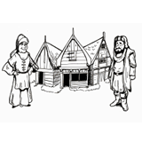

Nieuws

Opdracht middeleeuwse stad
We hebben een groepsopdracht over de middeleeuwse stad toegevoegd. Deze opdracht is geschikt voor het basisonderwijs en de eerste klas van het voortgezet onderwijs
Klik hier voor meer informatieWelkom
De website van Barbaar Educatie is klaar. Er staat nu nog niet veel op, maar dat zal de komende tijd veranderen.